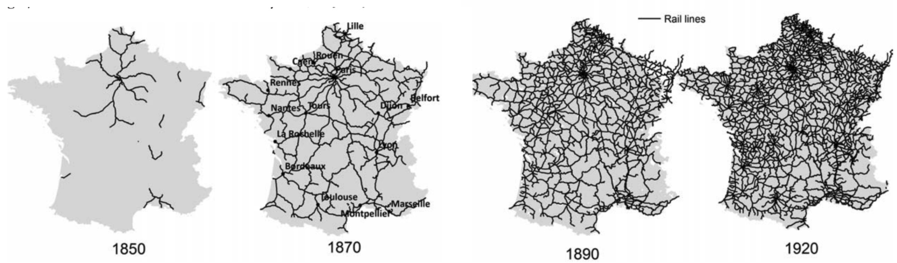

Introduction

Figure 1: Example of infrastructure expansion over time.The spread of a technology, also known as technological diffusion, often follows patterns remarkably similar to biological population growth. This phenomenon can be observed in historical examples, such as the expansion of the French railway network (see image above), as well as in the adoption of technologies like the radio, smartphones, automobiles, and social media platforms.
In this project, you will analyze the spread of a technology of your choice using the logistic growth model. By fitting this model to real-world data, you will estimate key parameters such as the carrying capacity, the intrinsic growth rate, and the inflection point (the point of maximum growth).
Task
- Data Collection: Identify reliable datasets that track the adoption of a specific technology over time (e.g., mobile phones, internet users, electric cars, or social media platforms). You must find at least two datasets. Ensure the data has sufficient time-series coverage to capture the early adoption, rapid growth, and saturation phases. Note: Finding the right data will be a challenge, so begin this step early.
- Model Fitting: Fit the logistic growth model to your datasets and analyze the model parameters (carrying capacity, growth rate, and inflection point).
- Alternative Modeling: Explore and apply at least one alternative model, such as the Bass diffusion model, to your data.
Discussion Points
In your final report, be sure to address the following:
- Data Methodology: Explain your approach to data collection and any challenges you faced in finding reliable sources.
- Logistic Model Fit: Explain your logistic model parameters and quantify how well the model fits the data (e.g., using specific goodness-of-fit metrics).
- Results & Interpretation: Present and interpret your findings, highlighting the estimated carrying capacity, growth rate, and inflection point.
- Model Comparison: Compare the results of the logistic growth model with your chosen alternative model (e.g., the Bass model). Which performs better and why?
- Limitations: Discuss any limitations of the logistic growth model in this context and suggest potential improvements.
- Literature Review: Compare your analysis with state-of-the-art research in technological diffusion modeling.
- Reflection: Reflect on what you learned about diffusion dynamics and data modeling techniques through this project.